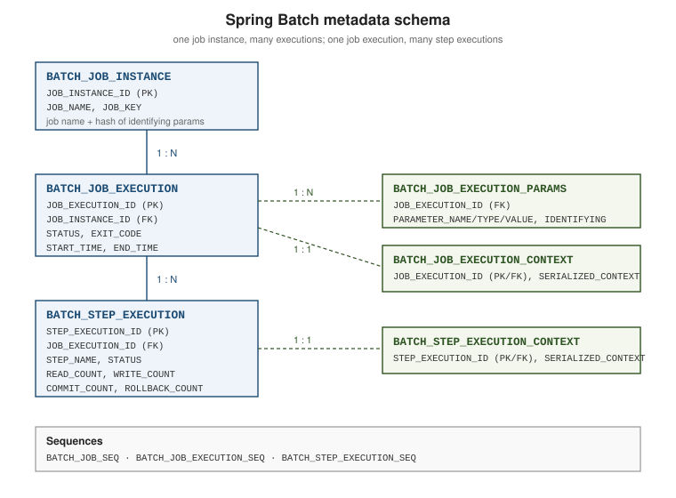

The job repository & metadata schema
|
This content was generated with the assistance of AI and should be verified against the official documentation before being relied on in production. |
The JobRepository is what makes Spring Batch more than a loop: it records every instance, every execution,
every step and every commit point, and it is the sole reason restart works. This page covers where that data
lives, how the schema is created, and how to read it back.
The metadata tables

| Table | Contents |
|---|---|
|
One row per |
|
One row per attempt: |
|
The parameters of one execution: |
|
The job-scoped |
|
One row per step attempt: |
|
The step-scoped |
Three sequences supply the primary keys on databases that use them: BATCH_JOB_INSTANCE_SEQ,
BATCH_JOB_EXECUTION_SEQ and BATCH_STEP_EXECUTION_SEQ (the first was called BATCH_JOB_SEQ in older releases; the
6.0 schema-postgresql.sql and schema-h2.sql create the three names above).
An excerpt of the real schema-postgresql.sql shipped in spring-batch-core 6.0.6 (the file is generated, and the
other vendors' scripts differ only in types and sequence syntax):
CREATE TABLE BATCH_JOB_INSTANCE (
JOB_INSTANCE_ID BIGINT NOT NULL PRIMARY KEY,
VERSION BIGINT,
JOB_NAME VARCHAR(100) NOT NULL,
JOB_KEY VARCHAR(32) NOT NULL,
CONSTRAINT JOB_INST_UN UNIQUE (JOB_NAME, JOB_KEY)
);
CREATE TABLE BATCH_JOB_EXECUTION (
JOB_EXECUTION_ID BIGINT NOT NULL PRIMARY KEY,
VERSION BIGINT,
JOB_INSTANCE_ID BIGINT NOT NULL,
CREATE_TIME TIMESTAMP NOT NULL,
START_TIME TIMESTAMP DEFAULT NULL,
END_TIME TIMESTAMP DEFAULT NULL,
STATUS VARCHAR(10),
EXIT_CODE VARCHAR(2500),
EXIT_MESSAGE VARCHAR(2500),
LAST_UPDATED TIMESTAMP,
CONSTRAINT JOB_INST_EXEC_FK FOREIGN KEY (JOB_INSTANCE_ID)
REFERENCES BATCH_JOB_INSTANCE (JOB_INSTANCE_ID)
);
CREATE TABLE BATCH_STEP_EXECUTION (
STEP_EXECUTION_ID BIGINT NOT NULL PRIMARY KEY,
VERSION BIGINT NOT NULL,
STEP_NAME VARCHAR(100) NOT NULL,
JOB_EXECUTION_ID BIGINT NOT NULL,
CREATE_TIME TIMESTAMP NOT NULL,
START_TIME TIMESTAMP DEFAULT NULL,
END_TIME TIMESTAMP DEFAULT NULL,
STATUS VARCHAR(10),
COMMIT_COUNT BIGINT,
READ_COUNT BIGINT,
FILTER_COUNT BIGINT,
WRITE_COUNT BIGINT,
READ_SKIP_COUNT BIGINT,
WRITE_SKIP_COUNT BIGINT,
PROCESS_SKIP_COUNT BIGINT,
ROLLBACK_COUNT BIGINT,
EXIT_CODE VARCHAR(2500),
EXIT_MESSAGE VARCHAR(2500),
LAST_UPDATED TIMESTAMP,
CONSTRAINT JOB_EXEC_STEP_FK FOREIGN KEY (JOB_EXECUTION_ID)
REFERENCES BATCH_JOB_EXECUTION (JOB_EXECUTION_ID)
);
CREATE TABLE BATCH_STEP_EXECUTION_CONTEXT (
STEP_EXECUTION_ID BIGINT NOT NULL PRIMARY KEY,
SHORT_CONTEXT VARCHAR(2500) NOT NULL,
SERIALIZED_CONTEXT TEXT,
CONSTRAINT STEP_EXEC_CTX_FK FOREIGN KEY (STEP_EXECUTION_ID)
REFERENCES BATCH_STEP_EXECUTION (STEP_EXECUTION_ID)
);
CREATE SEQUENCE BATCH_STEP_EXECUTION_SEQ MAXVALUE 9223372036854775807 NO CYCLE;
CREATE SEQUENCE BATCH_JOB_EXECUTION_SEQ MAXVALUE 9223372036854775807 NO CYCLE;
CREATE SEQUENCE BATCH_JOB_INSTANCE_SEQ MAXVALUE 9223372036854775807 NO CYCLE;The complete, authoritative DDL for every supported database is listed in Appendix A: meta-data schema. General DDL technique is covered in SQL DDL.
Creating the schema
The DDL ships inside spring-batch-core as classpath resources named
org/springframework/batch/core/schema-<platform>.sql — schema-postgresql.sql, schema-mysql.sql,
schema-oracle.sql, schema-h2.sql, schema-sqlserver.sql, and so on, each with a matching
schema-drop-<platform>.sql.
Spring Boot can run it for you:
spring:
batch:
jdbc:
initialize-schema: embedded # always | embedded | never
table-prefix: BATCH_
platform: postgresql # override the detected platform
schema: classpath:org/springframework/batch/core/schema-postgresql.sqlinitialize-schema |
Behaviour |
|---|---|
|
Create the tables only when the datasource is an embedded database (H2, HSQL, Derby). |
|
Always run the DDL at startup — convenient in development, and tolerable on an existing schema because |
|
Never touch the schema. The correct production setting: create the tables through your migration tool (Flyway, Liquibase) so they are versioned like every other table. |
Two more Boot properties map onto the repository settings of the next section: spring.batch.jdbc.isolation-level-for-create
(default unset, so SERIALIZABLE) and spring.batch.jdbc.validate-transaction-state (default true).
table-prefix renames all six tables at once — useful when several applications share a schema, or when a DBA
requires a naming convention. Whatever prefix is chosen must also be given to the repository configuration
(@EnableJdbcJobRepository(tablePrefix = "...")), see
Infrastructure configuration.
Choosing a repository implementation
| Implementation | When to use it |
|---|---|
JDBC ( |
Production default. Durable, queryable with plain SQL, restartable, and works with the transaction manager the business steps already use — so metadata and business writes can commit together. |
MongoDB ( |
For applications whose only datastore is MongoDB. Collections mirror the six tables. Requires a
|
Resourceless ( |
Samples, prototypes and unit tests. Nothing is persisted, so there is no restart and no history. |
Why creating a JobExecution is SERIALIZABLE
Creating a JobExecution runs at ISOLATION_SERIALIZABLE by default. The repository must check "does an
execution of this instance already exist, and is it still running?" and then insert — and two launchers
starting the same job at the same moment must not both pass that check. Serializable isolation makes the
check-then-insert atomic, so the second launcher fails fast rather than producing a duplicate concurrent
execution.
The level can be relaxed (Isolation.READ_COMMITTED) when the database’s serializable implementation is
expensive and duplicate launches are prevented some other way — a deliberate trade-off, not a default to
change casually. Isolation levels themselves are covered in
SQL Transactions and
Transaction Isolation & Locking.
@Configuration
@EnableBatchProcessing
@EnableJdbcJobRepository(isolationLevelForCreate = Isolation.READ_COMMITTED)
public class RelaxedIsolationInfrastructure {
}Querying run history
Since 6.0, JobRepository extends JobExplorer, so the read methods are on the repository itself — no
separate JobExplorer bean is needed. JobRegistry (optional, auto-populated) maps job names to Job beans
when a name must be resolved at runtime.
@Service
public class BatchHistoryService {
private final JobRepository jobRepository;
public BatchHistoryService(JobRepository jobRepository) {
this.jobRepository = jobRepository;
}
/** Prints the last 10 instances of a job and how every execution of each one ended. */
public void printHistory(String jobName) {
List<JobInstance> instances = jobRepository.getJobInstances(jobName, 0, 10);
for (JobInstance instance : instances) {
System.out.printf("instance %d%n", instance.getInstanceId());
for (JobExecution execution : jobRepository.getJobExecutions(instance)) {
System.out.printf(" execution %d: %s (%s) %s -> %s%n",
execution.getId(),
execution.getStatus(),
execution.getExitStatus().getExitCode(),
execution.getStartTime(),
execution.getEndTime());
for (StepExecution step : execution.getStepExecutions()) {
System.out.printf(" step %-20s read=%d write=%d skip=%d%n",
step.getStepName(),
step.getReadCount(),
step.getWriteCount(),
step.getSkipCount());
}
}
}
}
public Set<String> runningExecutions(String jobName) {
return jobRepository.findRunningJobExecutions(jobName).stream()
.map(execution -> execution.getId().toString())
.collect(Collectors.toSet());
}
}The same data is readable with plain SQL, which is often the quickest production diagnosis — see SQL Queries:
SELECT i.JOB_NAME, e.JOB_EXECUTION_ID, e.STATUS, e.EXIT_CODE, e.START_TIME, e.END_TIME
FROM BATCH_JOB_EXECUTION e
JOIN BATCH_JOB_INSTANCE i ON i.JOB_INSTANCE_ID = e.JOB_INSTANCE_ID
WHERE i.JOB_NAME = 'endOfDayJob'
ORDER BY e.JOB_EXECUTION_ID DESC
FETCH FIRST 20 ROWS ONLY;The metadata tables grow with every run; indexing and pruning them is discussed in Profiling & tuning.
What a run writes: the statement trail
Everything the repository stores is written through plain SQL statements, so they can be observed by turning on the
SQL logging of JdbcTemplate. For one run of the end-of-day job — three steps, a ten-line file, a chunk size of three — the repository issued 49 statements against the metadata tables. In order, grouped:
The shape explains two operational facts. The metadata write rate is proportional to commits, not to items: the
four chunks of the load step produced the repeated UPDATE BATCH_STEP_EXECUTION_CONTEXT and UPDATE
BATCH_STEP_EXECUTION pairs, which is why a tiny commit interval makes the repository the bottleneck (see
Profiling & tuning). And the job context is rewritten after
every step, which is the "persisted between steps" behaviour of the
ExecutionContext.
The six tables after a failure and a restart
The most informative state to read is the one a restart leaves behind. The end-of-day job was run over a file with a bad record (trade 8, quantity 0); the file was then corrected and the execution restarted. The tables, trimmed to the interesting columns, afterwards held:
-- BATCH_JOB_INSTANCE
JOB_INSTANCE_ID JOB_NAME JOB_KEY
1 endOfDayJob df0352cc1b533043a1cc787fb8d0052a
-- BATCH_JOB_EXECUTION
JOB_EXECUTION_ID JOB_INSTANCE_ID STATUS EXIT_CODE EXIT_MESSAGE
1 1 FAILED FAILED java.lang.IllegalArgumentException: trad...
2 1 COMPLETED COMPLETED
-- BATCH_JOB_EXECUTION_PARAMS
JOB_EXECUTION_ID PARAMETER_NAME PARAMETER_TYPE PARAMETER_VALUE IDENTIFYING
1 input.file java.lang.String data/work/trades.csv N
1 run.date java.time.LocalDate 2026-01-30 Y
2 input.file java.lang.String data/work/trades.csv N
2 run.date java.time.LocalDate 2026-01-30 Y
-- BATCH_STEP_EXECUTION
STEP_EXECUTION_ID JOB_EXECUTION_ID STEP_NAME STATUS READ_COUNT FILTER_COUNT WRITE_COUNT COMMIT_COUNT ROLLBACK_COUNT
1 1 stageStep COMPLETED 0 0 0 1 0
2 1 loadStep FAILED 9 1 5 2 1
3 2 loadStep COMPLETED 4 0 4 2 0
4 2 reportStep COMPLETED 0 0 0 1 0Read it in order. One instance, two executions: the restart copied the parameters into a second set of
BATCH_JOB_EXECUTION_PARAMS rows. stageStep appears only under execution 1 — it completed, so the restart did not
run it again — while loadStep has a failed and a completed row. The failed row’s counters are the in-flight state
at failure (nine items read, only the five of the two committed chunks written, one rollback), and the step
contexts say where the restart resumed: the failed loadStep context held tradeReader.read.count=6 and, after the
second attempt, 11. The job context of execution 2 still held staged.rows=10, which reportStep needed, so the
job context is restored on restart too. Finally the business table has nine rows with trade 5 absent — no
duplicates.
The BATCH_JOB_EXECUTION row of the failed attempt carries the exception text in EXIT_MESSAGE (truncated to 2500
characters by the column), which makes the SQL query of the previous section a usable first diagnostic.